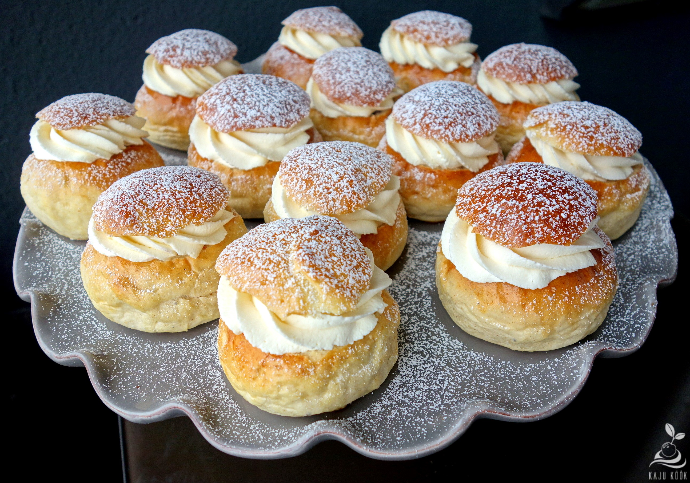

Hõrgud vastlakuklid

- Kogus: ca 30 kuklit
- Valmistusviis: küpsetamine
- Käik: dessert
| Koostiosad |
Kogused |
| Piim |
5 dl |
| Pärm |
50 g |
| Sool |
1 tl |
| Või |
200 g |
| Muna |
2 |
| Nisujahu |
800 g |
| Peenestatud kardemon (Meira) |
1 tl |
| Suhkur |
3 sl |
Valmistamine:
Lisa leigele piimale suhkruga vedeldatud pärm ja kuni pool jahust (tainas peaks jääma umbes hapukoore paksune). Klopi segamini ja lase soojas kohas rätikuga kaetult kerkida, kuni taina pinnale tekivad väikesed mullikesed.
Sega kerkinud tainale juurde sool, kardemon, jahtunud sulavõi, lahtiklopitud munad ja ülejäänud jahu. Sõtku, kuni saad ühtlase läikiva taina, mis käte ja kausi küljest lahti lööb. Pane tainas uuesti sooja kohta kerkima.
Kui tainas on kerkinud, siis vormi kuklid. Selleks murra tükike tainast (nii umbes väikese muna suurune tükk), aseta hästi kergelt jahusele töölauale, aseta peopesa kuplina peale (nagu hoiaksid arvutihiirt, aga tainatükk jääb peopesa alla). Nüüd tee peopesaga töölaual väikeseid tugevaid ringe, kuklit kergelt surudes, kuni tainatükk on kenasti siledaks kukliks muutunud.
Aseta kuklid ahjuplaadile ja lase veel kerkida.
Määri need pealt piima või munaga ja küpseta 200-225kraadises ahjus 10-15 minutit, kuni kuklid on pealt kuldsed.
Võta kuklid ahjust välja ja lase köögirätiku all jahtuda.
Lõika jahtunud kuklitelt tükk pealt ära, täida vahukoorega ja pane äralõigatud tükike õrnalt peale. Vahelduseks proovi vahukoore hulka segada nt pohlamoosi.
| Täidis |
| Rõõskoor (vahustatud) 35% |
| Suhkur |
| Vanillisuhkur või kardemon |